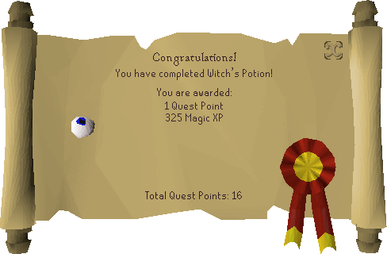

Witch's Potion
Description
Interested in becoming one with your darker side? Tap into the hidden depths of your magical potential by making a potion with the help of Hetty the Rimmington witch. Hetty will make a potion to unlock your dark powers and she needs four ingredients that she wants you to get, however, the price for power is not light as they say...
Required Items
- 3-4 coins
- Burnt meat
- Eye of newt
- Onion
- Rat's tail
Steps
Starting out
Begin the quest by talking to Hetty in her house in south-east Rimmington. She will tell you the ingredients that she wants you to get for her potion are: a piece of burnt meat, an eye of newt, an onion, and a rat's tail.
Burnt meat
- Head directly east from Hetty's house in Rimmington towards Port Sarim. The first building you see is Wydin's Food Store.
- Enter Wydin's Food Store and purchase a piece of raw beef for 1 coin.
- Alternatively, you could head slightly south-west towards the chapel graveyard and slay a nearby giant rat for a piece of raw rat meat.
- After obtaining your piece of raw meat, you will now have to burn it.
- From Wydin's Food Store, go north past Gerrant's Fishy Business and enter the building directly north of it.
- Cook your piece of raw meat until burnt on the range in the east room of the building.
- If you are a master level chef and perfectly cooked your piece of meat, be careful not to accidentally eat it as you would need to reacquire another piece of raw meat. Simply place your piece of cooked meat on the range once more to obtain a piece of burnt meat.
Eye of newt
- From the house with the range, go north past Grum's Gold Exchange and head into Betty's Magic Emporium.
- Purchase an eye of newt for 3 coins.
Onion
- From Betty's Magic Emporium, follow the path north until you reach the courtyard of Sarah's farm.
- Take the path east, continuing past Draynor Village until you reach a crossroads with a nearby wheat field.
- From there, continue following the path east until you reach Farmer Fred's house.
- Head towards the back of Farmer Fred's house and pick an onion from his onion patch.
Rat's tail
- From Farmer Fred's house, get back on the path in which you came from, and return west towards Port Sarim.
- At Port Sarim, simply head south-west towards Rimmington.
- Arriving back in Rimmington, enter Brian's Archery Supplies directly west of Hetty's house.
- Slay one of the rats scurrying around the shop to obtain a rat's tail.
Finishing up
When you have all four items, return to Hetty and talk to her.
You pass the ingredients to Hetty and she puts them all into her cauldron. Hetty closes her eyes and begins to chant. The cauldron bubbles mysteriously.
Drink from the cauldron to complete the quest and gain your reward.
Quest complete!

Quest List